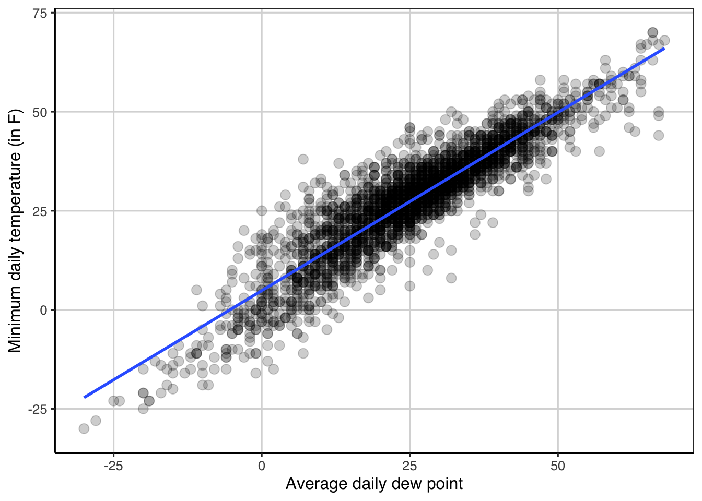
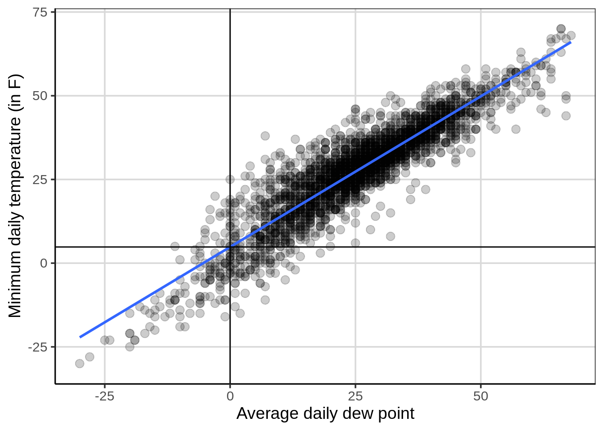
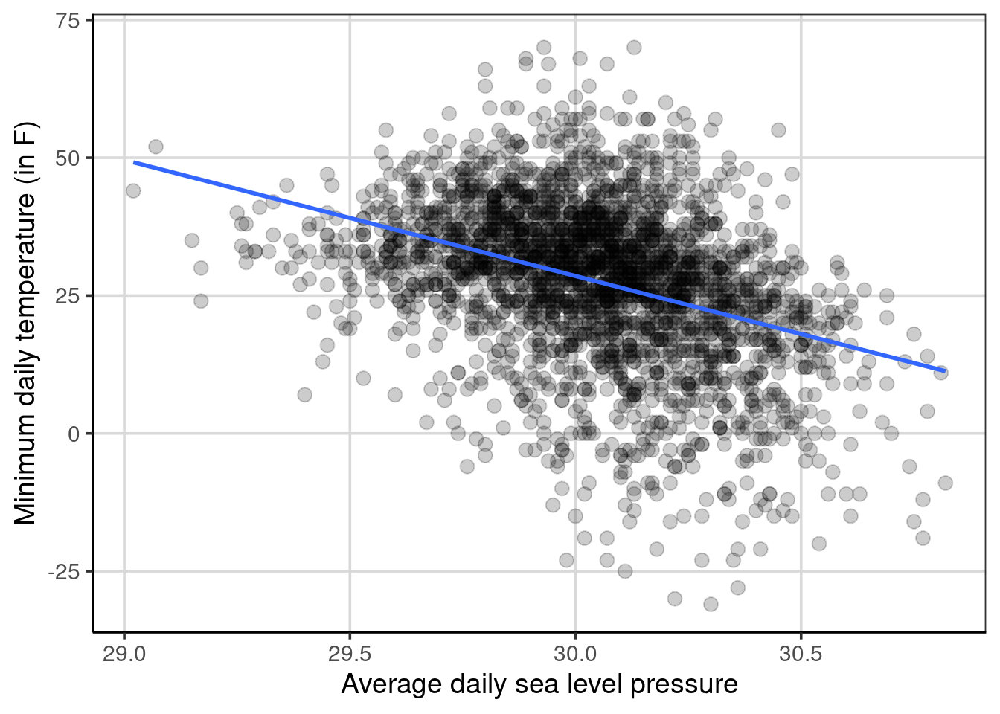
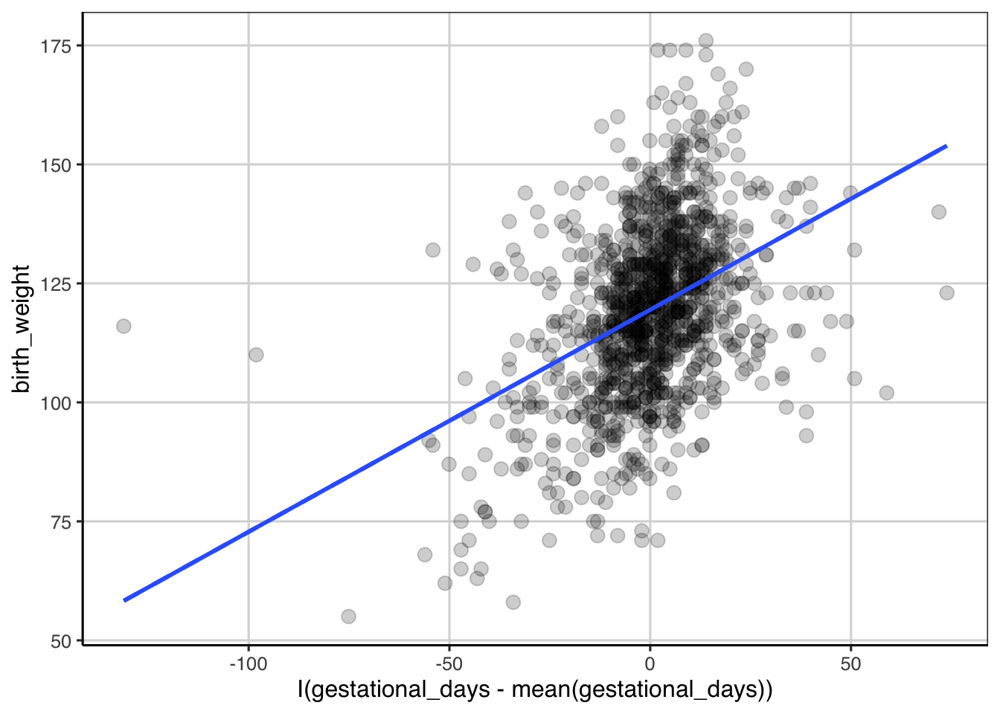

Chapter 7 Linear Regression
Linear regression is another statistical model that can be used when the outcome is an integer or continuous, similar to that of the regression tree. There are similarities between linear regression and regression trees, however there are also very notable differences.
Linear regression and regression trees are both used when the outcome is continuous or continuous. These methods are both able to make predictions for the outcome and identify which attributes are most important in aiding in making those predictions. There are differences though in the two methods that are important to distinguish. Linear regression makes an assumption on the relationship between the outcome and attributes entered into the model. Linear regression, as in the name, assumes that the relationship between the outcome and an attribute is linearly related.13 Regression trees however do not directly make this linear assumption between the outcome and an attribute. This assumption can make linear regression more parsimonious, meaning that the model can be simpler, which is often a goal of science, to explain the phenomenon of interest with the simplest possible explanation.
7.1 Simple Regression continuous predictor
7.1.1 Description of the Data
These data contain information on mother’s and baby’s health for 1,174 pregnant women.
library(tidyverse)
library(ggformula)
library(mosaic)
library(rsample)
library(statthink)
# Set theme for plots
theme_set(theme_statthinking())
us_weather <- mutate(us_weather, snow_factor = factor(snow),
snow_numeric = ifelse(snow == 'Yes', 1, 0))7.1.2 Scatterplots
As we’ve explored before, scatterplots help to explore the relationship between two continuous, quantitative data attributes. These are created with the gf_point() function and adding lines to the figure to provide some guidance to the relationship between the two attributes can be done with the gf_smooth() function. Below, a scatterplot is created that explores the relationship between the low temperature and the average daily dew point.14
gf_point(drybulbtemp_min ~ dewpoint_avg, data = us_weather, size = 3, alpha = .2) %>%
gf_smooth(method = 'lm', size = 1) %>%
gf_labs(x = "Average daily dew point",
y = "Minimum daily temperature (in F)")
Figure ?? shows the relationship between minimum temperature and average daily dew point assuming a linear relationship (specified with gf_smooth(method = 'lm')) between the two attributes. In this example, the relationship between the two attributes goes from the lower left to the upper right, indicating a positive relationship. That is, as the average daily dew point tends to increase, the minimum daily temperature also tends to increase. The relationship is not perfect, which is shown by the points not falling perfectly on the blue line, but the data are clustered relatively closely to this blue line. This would suggest that the relationship is stronger rather than being weaker and closer to +1 than 0.
To estimate as a single quantity the relationship between the two attributes, the correlation can be calculated with the cor() function with the primary argument being a formula depicting the two variables to compute the correlation. The optional argument, use = 'complete.obs' is used as there are some missing data on these attributes and these data are removed prior to the calculation.
cor(drybulbtemp_min ~ dewpoint_avg, data = us_weather,
use = 'complete.obs')## [1] 0.9102476Here the correlation represents the degree of linear relationship between the two variables. Values closer to 1 in absolute value (i.e. +1 or -1) show a stronger linear relationship and values closer to 0 indicate no relationship or weaker relationship. The correlation between the two variables above was about 0.91 indicating that there is a strong positive linear relationship between the minimum temperature and the daily dew point. The correlation is shown to be positive due to the coefficient being positive and the general trend from the scatterplot shows a direction of relationship moving from the lower left of the figure to the upper right of the figure. A negative correlation would have a negative sign associated with it and would trend from the upper left to the lower right of a scatterplot.
7.1.3 Fitting a linear regression model
Now that the correlation was computed, we have evidence that there is a relationship between the minimum temperature and the average daily dew point. To provide some more evidence about the strength of this relationship and how much error is involved, fitting a linear regression model is often done. This can be done with the lm() function where the two arguments that need to be specified are a formula and the data to use for the model fitting. The formula takes the following form: drybulbtemp_min ~ dewpoint_avg, where the minimum temperature is the outcome of interest (in language we’ve used previously, this is the attribute we want to predict) and the average daily dew point is the attribute we want to use to help to predict the minimum temperature. Another way to think about what these variables represent is to explain variation in the minimum temperature with the average daily dew point. In other words, the assumption is made that the average daily dew point impacts or explains differences in the minimum temperature.
temp_reg <- lm(drybulbtemp_min ~ dewpoint_avg,
data = us_weather)
coef(temp_reg)## (Intercept) dewpoint_avg
## 4.8343103 0.8999469The following coefficients represent the linear regression equation that more generally can be show as:
\[\begin{equation} drybulbtemp\_min = 4.83 + 0.90 dewpoint\_avg + \epsilon \end{equation}\]
The equation can also be represented without the error, \(\epsilon\) as:
begin{equation} = 4.83 + 0.90 dewpoint_avg \end{equation}
where now the minimum temperature outcome has a hat (i.e. \(\hat{y}\)) that denotes mathematically that the equation predicts a value of minimum temperature given solely the average daily dew point. The first equation above says that the original observed minimum temperature is a function of the average daily dew point plus some error. Using the equation above, the predicted minimum temperature can be obtained by including a value inserted for the average daily dew point. Let’s pick a few values for the average daily dew point to try.
4.83 + 0.90 * -15## [1] -8.674.83 + 0.90 * 0## [1] 4.834.83 + 0.90 * 25## [1] 27.334.83 + 0.90 * 26## [1] 28.23You may notice that the predicted value of minimum temperature increases by 0.90 degrees Fahrenheit for every one degree increase in average daily dew point, often referred to as the linear slope. The predicted values would fit on the line shown in Figure ??. This highlights the assumption made from the linear regression model in which the relationship between the minimum temperature and the average daily dew point is assumed to be linear. It is possible to relax this assumption with a more complicated model, however that is not explored here. The y-intercept, shown as 4.83 in the equations above will be explored in the next section.
7.1.4 Explore the y-intercept
So far the discussion has focused on the linear slope, often a term that is of most interest. However, the y-intercept can also be an important term. The y-intercept from the equations above when the minimum temperature was predicted or explained by the average daily dew point was 4.83. What does this term mean? Exploring the scatterplot can provide some insight to the interpretation of the intercept.
Figure ?? shows a scatterplot where the y-axis is the minimum temperature and the x-axis is the average daily dew point. This figure shows a horizontal and vertical line that cross on the blue line shown in the figure. The vertical line is shown at an average daily dew point of 0 and the horizontal line is at a minimum temperature at 4.83. These cross or intersect on the blue line which represents the relationship between the average daily dew point and the minimum temperature. This depicts what the y-intercept is, the y-intercept represents the average minimum temperature for an average daily dew point of 0. More generally, the y-intercept is the average value of the outcome when all of the attributes included in the linear regression are 0.
gf_point(drybulbtemp_min ~ dewpoint_avg, data = us_weather, size = 3, alpha = .2) %>%
gf_smooth(method = 'lm', size = 1) %>%
gf_vline(xintercept = 0) %>%
gf_hline(yintercept = 4.83) %>%
gf_labs(x = "Average daily dew point",
y = "Minimum daily temperature (in F)")
In the example that has been explored so far, a value of 0 for the average daily dew point occurs within the sample of data. That is, an average daily dew point of 0 occurs in the data are is directly interpretable. This would mean that when an average daily dew point of 0 happens in real life, the minimum temperature is 4.83 degrees Fahrenheit on average for the data that is included in this sample. There are situations where a value of 0 for an attribute is not plausible to occur. An example could be predicting a baby’s birth weight based on the number of gestation days.15 In situations where the value of 0 is not plausible or meaningful, the data can be centered on a value that is more meaningful or plausible to help with the interpretation of the y-intercept.
Before this is done, below is a more concrete example that still tries to predict/explain minimum temperature, but now the attribute to explain differences in the minimum temperature is the average daily sea level pressure. Sea-level pressure is a way to measure atmospheric pressure and is measured in inches of mercury16. Figure ?? shows a scatterplot of this relationship. First, notice that the direction of the blue line is different than before, it starts in the upper left quadrant and decreases as the sea level pressure increases. This is indicative of a negative relationship between the two attributes. The correlation can be estimated to be -0.38, a moderate negative relationship. This relationship is not as strong as the relationship between minimum temperature and average daily dew point. The variation around the blue line in ?? is much larger which depicts a weaker relationship (ie., more error) compared to the minimum temperature and dew point relationship (see Figure ??).
gf_point(drybulbtemp_min ~ sealevelpressure_avg, data = us_weather, size = 3, alpha = .2) %>%
gf_smooth(method = 'lm', size = 1) %>%
gf_labs(x = "Average daily sea level pressure",
y = "Minimum daily temperature (in F)")
If a linear regression is estimated with these two attributes, the following coefficients and resulting regression equation can be generated.
sea_temp <- lm(drybulbtemp_min ~ sealevelpressure_avg, data = us_weather)
coef(sea_temp)## (Intercept) sealevelpressure_avg
## 660.05123 -21.05011\[\begin{equation} drybulbtemp\_min = 660.05 - 21.05 sealevelpressure\_avg + \epsilon \end{equation}\]
For these, the y-intercept is about 660 degrees Fahrenheit and the linear slope is about -21 degrees Fahrenheit. How are these interpreted? Starting first with the linear slope, the -21 means that for every one unit increase in sea level pressure (ie., moving from 29 to 30 inches of mercury), the average minimum temperature decreases by 21 degrees Fahrenheit.
Why is the y-intercept 660 degrees Fahrenheit, a temperature that is much above the boiling point of water and is hotter than most ovens. Furthermore, this is not an atmospheric temperature that we have seen in the data, so why is the y-intercept 660 degrees Fahrenheit? Ultimately, this comes down to the range of sea level pressure, where the minimum value in the data is 29.02, a value very far from 0. Therefore, the linear relationship depicted above is extrapolated outside the range of the data (ie, decreased by 29.02 sea level units) which increases the temperature by 610.871 degrees Fahrenheit units. This value is not interpretable or meaningful as it would not be possible to get a sea level pressure of 0 in the metric of inches of mercury. It is possible to modify the data, but not change the overall relationship between minimum temperature and sea level pressure to help increase the interpretation of the y-intercept. Three options will be explored, mean value centered, minimum value centered, and maximum value centered, although there are many other potential options.
7.1.4.1 Mean center sea level pressure
First, mean centering the x attribute can often be a way to make the y-intercept more interpretable. The code below shows a scatterplot by subtracting the mean from all the values of sea level pressure. More explicitly, the value of 30.04 was subtracted from each sea level pressure value in the data.
gf_point(drybulbtemp_min ~ I(sealevelpressure_avg - mean(sealevelpressure_avg, na.rm = TRUE)),
data = us_weather, size = 3, alpha = .2) %>%
gf_smooth(method = 'lm', size = 1) %>%
gf_labs(x = "Average daily sea level pressure",
y = "Minimum daily temperature (in F)")
Notice that the relationship is the same as before, but now the scale of sea level pressure is different. From the coefficients shown below, notice that the linear slope is the same as before, -21.05, showing that the subtraction of the mean for each value did not impact the overall relationship between the two attributes. The difference, is now the y-intercept is much smaller and would represent the mean minimum temperature when the mean-centered sea level pressure is 0 (ie., a value of 30.04 in the original metric).
sealevel_reg_centered <- lm(drybulbtemp_min ~ I(sealevelpressure_avg - mean(sealevelpressure_avg, na.rm = TRUE)),
data = us_weather)
coef(sealevel_reg_centered)## (Intercept)
## 27.63117
## I(sealevelpressure_avg - mean(sealevelpressure_avg, na.rm = TRUE))
## -21.05011The new equation would look like:
begin{equation} = 27.63 - 21.05 (sealevelpressure_avg - mean(sealevelpressure_avg)) \end{equation}
27.63 - 21.05 * -1## [1] 48.6827.63 - 21.05 * 0## [1] 27.6327.63 - 21.05 * .5## [1] 17.105This can provide an intercept that is more interpretable and can be a model parameter that is of direct interest. The value for the y-intercept also makes more intuitive sense, which can aid in model interpretation. It should be kept in mind that this model would fit the data the same as before, that is, this model is not inherently better. Instead the benefits of this model is simply in the interpretation and intuitiveness of the y-intercept. The regression line that has been shown in the scatterplots in Figures ?? and ?? are the same ones.
7.1.4.2 Minimum or Maximum centered sea level pressure
Mean centering an attribute can be an attractive way to make the y-intercept more intuitive and interpretable, but it is not the only option. A few other options that are common include subtracting the minimum or maximum values from the predictor attribute. These are shown below, starting first with the minimum centered and then the maximum centered regression.
sealevel_reg_min <- lm(drybulbtemp_min ~ I(sealevelpressure_avg - min(sealevelpressure_avg, na.rm = TRUE)),
data = us_weather)
coef(sealevel_reg_min)## (Intercept)
## 49.17705
## I(sealevelpressure_avg - min(sealevelpressure_avg, na.rm = TRUE))
## -21.05011sealevel_reg_max <- lm(drybulbtemp_min ~ I(sealevelpressure_avg - max(sealevelpressure_avg, na.rm = TRUE)),
data = us_weather)
coef(sealevel_reg_max)## (Intercept)
## 11.28686
## I(sealevelpressure_avg - max(sealevelpressure_avg, na.rm = TRUE))
## -21.05011Two main takeaways from these two new models. First, the relationship between the minimum temperature and the sea level pressure does not change. The average change in the minimum temperature for a unit change of sea level pressure is still 21 degrees Fahrenheit and the relationship is always negative. The element that changes is the y-intercept. For the minimum centered model, the y-intercept is 49.18 degrees Fahrenheit. The interpretation is that when the sea level pressure has a value of 0 (ie., a value of 29.02 in the original metric), the average minimum temperature is 49.18 degrees Fahrenheit. Similarly, the maximum centered model has a y-intercept of 11.29. This represents the average minimum temperature when the sea level pressure is 0 (ie., a value of 30.82 in the original metric).
If the three different centered y-intercepts are compared, min-centered = 49.18, mean-centered = 27.63, and max-centered = 11.29. The mean-centered y-intercept is in between the minimum and maximum centered values, why is this occurring? This is happening due to the linear relationship that is assumed between the minimum temperature and the sea level pressure with the linear regression model. If a different functional form was assumed (ie., a curved relationship), there would likely be larger differences between the pairs of y-intercept values shown above.
7.2 Conditional Means
To come …
Although there is an assumption that the outcome and attribute are linearly related in linear regression, it is possible to specify the model to explore non-linear trends.↩︎
Dew point is the temperature to which air must be cooled to become saturated with water vapor. Wikipedia↩︎
Gestational days is the number of days that the baby is in the womb before being born, see gestation on Wikipedia↩︎